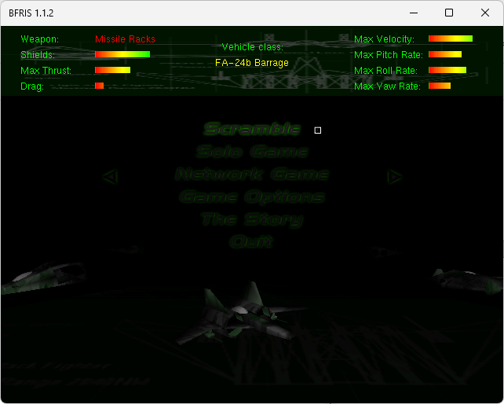
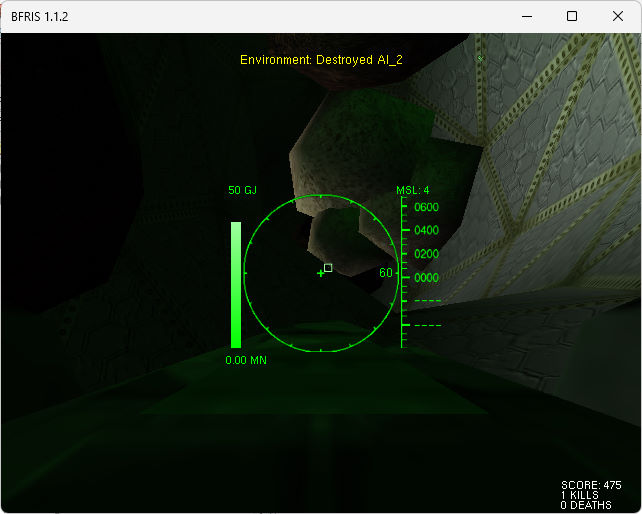

名稱：無名戰士／BFRIS零重力戰鬥機戰鬥 (BFRIS: Zero Gravity Fighter Combat，英文版)
簡介：Aegis 1999年出品的太空戰鬥機戰鬥模擬遊戲，由GT代理發行。遊戲係採用一對一，
在封閉的競技場中進行戰鬥 [待補]。


備註：本版為1.1.2版
保護：光碟
備註：因系統相容性問題，虛擬機+XP/Win9x均無法正常執行，請使用Win64+dgVoodoo2，且
到Options設定不要勾選Full Screen（全螢幕）。